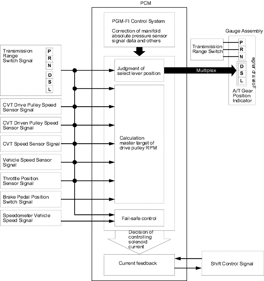

position. In the
position. In the  position, the ratio is set to 1.300 when pressing the accelerator and to 2.466 when the accelerator released.
position, the ratio is set to 1.300 when pressing the accelerator and to 2.466 when the accelerator released.
Honda Multi Matic Transmission/CVT
|
14-265 |
Shift Control
The PCM compares actual driving conditions with memorised driving conditions to control shifting and instantly determines a ratio of drive pulley and driven pulley by various signals sent from sensors and switches. The PCM actuates the CVT speed change control valve assembly to control pulley pressure to the pulleys. The drive pulley drives the driven pulley by the steel belt at a ratio between 2.466 and 0.407 in non-stage in the position. In the position, the ratio is set to 1.300 when pressing the accelerator and to 2.466 when the accelerator released.
